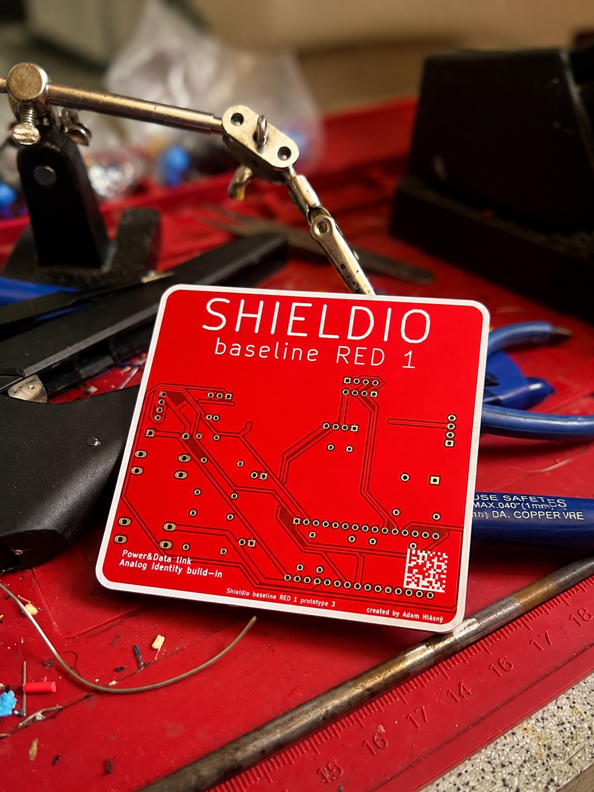

Shieldio vzniklo s cílem odstranit bariéry, které dnes brání školám využívat elektroniku a robotiku naplno.
Chceme vytvořit systém, díky kterému může každý učitel nabídnout žákům praktickou zkušenost s technologiemi.

Elektronika a robotika jsou pro studenty atraktivní, ale jejich výuka často naráží na časovou náročnost, složitou přípravu a nedostatek připravených materiálů.
Mnoho škol má zájem o moderní technologie, ale chybí jim jednoduchý nástroj.
Hardware, software a výukové materiály jako jeden celek.
Každý návrh ověřujeme tak, aby fungoval v reálné třídě.
Nezáleží na tom, jestli má škola vlastního elektrotechnika.
Nejlepší způsob pochopení techniky je vlastní experiment.
Technické myšlení bude stále důležitější součást vzdělání.
Vývoj a testování prvních modulů.
Ověření použití přímo ve výuce.
Lekce, projekty a metodická podpora.
Kompletní prostředí pro technickou výuku.
Hledáme školy a učitele, kteří chtějí pomoci vytvářet budoucnost technického vzdělávání.
Kontaktovat nás